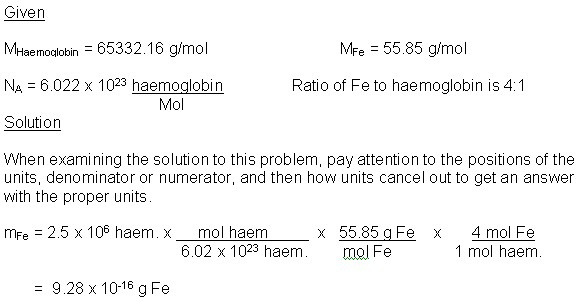
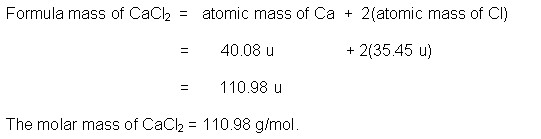
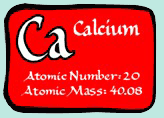
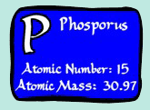

Unit 3: Quantities in Chemical Reactions
Activity 2: The Mole
Content
Molecular Mass and Molar Mass
If we know the atomic masses of the elements, then the molecular mass of a compound can be determined by the sum of its elements. For example, the molecular mass of ammonia, NH3, is
atomic mass of N + 3(atomic mass of H)
or 14.01 u + 3(1.01 u) = 17.04 u
To calculate the molecular mass of a compound, the atomic mass of each element is multiplied by the number of atoms in the formula and then the sum of the atomic masses is taken. The molar mass of a compound is equal to the molecular mass, but it is based on 1 mole of the compound.
 Check Your Understanding
Check Your Understanding
- Find the molecular mass and molar mass of:
a) “laughing gas”, N2O and
b) caffeine, C8H10N4O2. Answer
Answer
Combining the formula of a compound and the mass of the compound even allows us to calculate the number of atoms of a particular element in that compound through the use of ratios.
Did you know?

|
About 2.5 million red blood cells per second are produced by your bone marrow. The molecule in the red blood cell contains haemoglobin. Haemoglobin helps the red blood cell carry oxygen and carbon dioxide. The molecular formula for this compound is C2952H4664N812O832S8Fe4. |
|---|
 Example
Example
Calculate the mass of iron that is used to make the 2.5 million haemoglobin molecules per second by your bone marrow.

Formula Mass
Since ionic compounds do not consist of distinct molecular units, the proper term for its molecular mass is formula mass. For example, the formula mass of CaCl2 is one formula unit in u.

Check Your Understanding
- Find the number of calcium ions in 15 g of Ca3P2.
.  And 
Answer
Journal
|
|
Be sure to make notes of the different questions and their respective solutions. At some point in time, you will be able to quickly calculate the molar mass of a compound as a side calculation in order to proceed with further calculations in future work. Please note that your teacher may require you to submit your journal at a later date. |
|---|
 Resources
Resources
This is a disclaimer. External Resources will open in a new window. Not responsible for external content.
Unless otherwise indicated, all images in this Activity are from the public domain or are © clipart.com or Microsoft clipart and are used with permission.